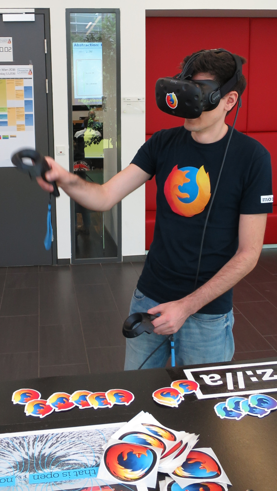
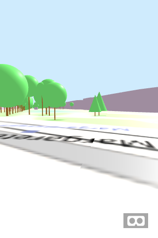
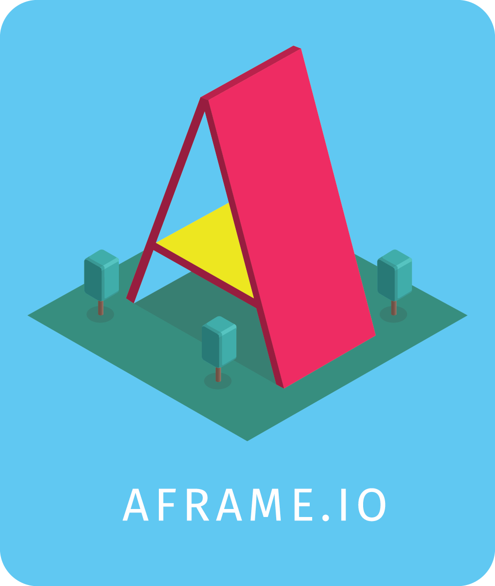
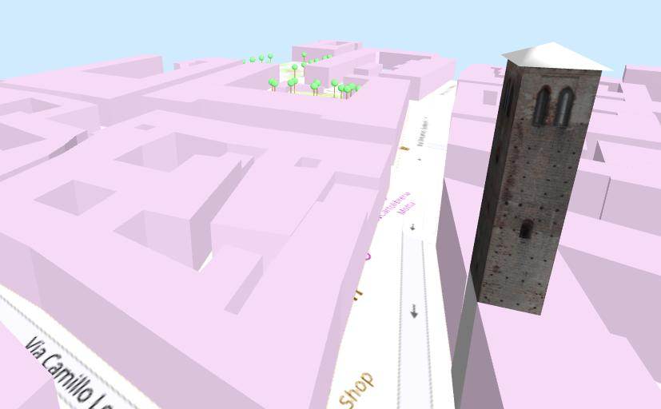
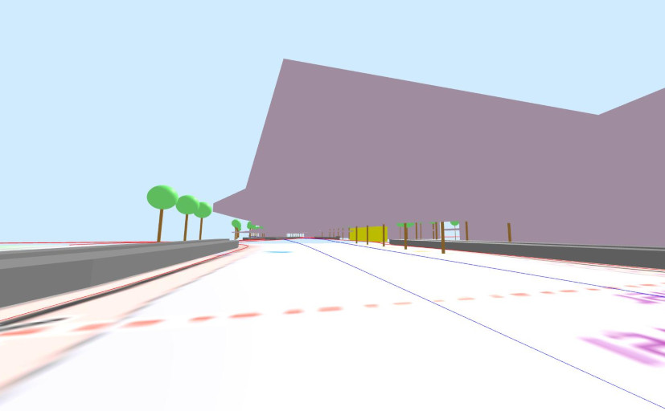
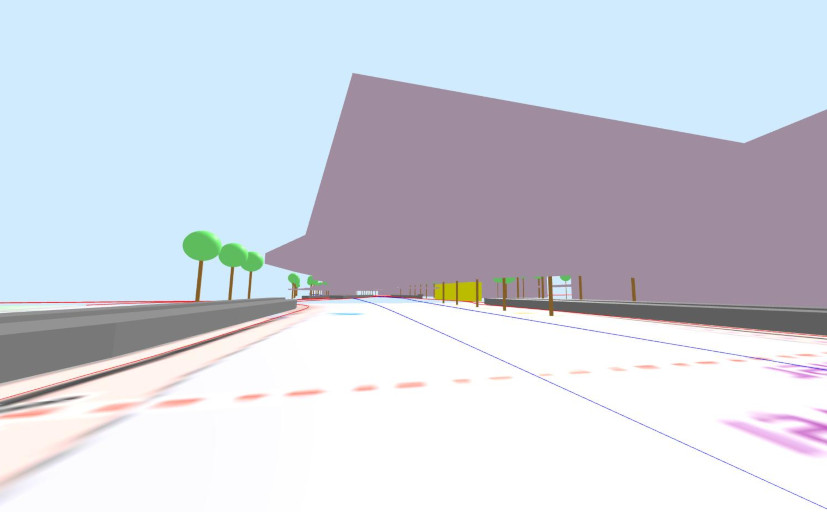

Contents
VR Map: Using OSM Data In a WebVR Environment
The following slides are available in this presentation:
VR Map: Using OSM Data In a WebVR Environment
Simple GeoData Visualization with A-Frame
Slides: https://slides.kairo.at/sotm2019/
- Created for a presentation at State of the Map 2019 in Heidelberg, Germany.
- Written in HTML 5 with CSS 3 and JavaScript.
- Navigation via links on all slides, via access keys (e.g. "n"/Alt+Shift+N for "next") or back/forward arrow keys
- Contents
 04/2018-09/2019 Robert Kaiser -
"Mozilla", "Firefox" and their logos are
trademarks
of Mozilla Foundation.
04/2018-09/2019 Robert Kaiser -
"Mozilla", "Firefox" and their logos are
trademarks
of Mozilla Foundation.
Robert Kaiser - KaiRo

- kairo@kairo.at / home.kairo.at
- KaiRo on OSM
- Mozilla Tech Speaker
- Based in Vienna, Austria
- Not on most major social networks
- But on Diaspora*, Mozillians, Telegram, LinkedIn, KaiRo-at at GitHub
Objectives

- Cross-Device nature of WebVR/WebXR
- Ease of use of A-Frame
- Ability to use OpenStreetMap data
WebVR & WebXR

- WebVR: Virtual Reality powered by Web technologies
- Evolving into WebXR Device API - Mixed Reality (Virtual + Augmented Reality)
- Open Standard (proposal), in concert with WebGL, WebAudio and Gamepad APIs
- Firefox: Windows (55+) & MacOS X (64+) release, Linux in development
- Chrome experimental; support on stand-alone headset browsers
VR Map

- Demo for WebVR with live OpenStreetMap data
- Usable in 2D mode on any modern browser
- Supports headset + controller where WebVR is supported
- Using A-Frame (see later)
- Simple: Currently ~80 lines HTML, ~600 lines JS
vrmap.kairo.at
Code Basics
- The world is flat (in two ways)!
- Ground tiles using Mercator projection, "Mapnik" rendering from OSM via KaiRo's tile caching server
- Trees and buildings: live OSM data via Overpass API
- Camera/controller setup to support multiple devices for navigating the scene
- Built with Mozilla-orginated A-Frame library
A-Frame - XR Made Simple

Example:
<a-scene>
<a-sphere position="0 1.25 -1" radius="1.25" color="#EF2D5E"></a-sphere>
<a-cube position="-1 0.5 1" rotation="0 0 0" …>
<a-animation attribute="rotation" … to="0 360 0"></a-animation>
</a-cube>
<a-cylinder position="1 0.75 1" …></a-cylinder>
<a-plane …></a-plane>
<a-sky color="#ECECEC"></a-sky>
</a-scene>
Code Details
index.html: JS includes, start dialog, scene, camera/controller rigmap.js: variables, load handler, fetch from Overpass APIconversions.js: coordinate conversionsposition-limit.js: A-Frame component for keeping position above groundtiles.js, trees.js, buildings.js: load/draw the 3 types of objects- KaiRo-at/vrmap at GitHub
Objectives - Recap
- Cross-Device nature of WebVR/WebXR
- Ease of use of A-Frame
- Ability to use OpenStreetMap data
Make It Your Own

tune3DMR
tune3DMR
OSMRail

